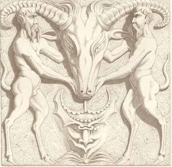

Saturday, January the 15th, 2011
back to: title, date or indexes

It is fortunate that your own dear Mr Key is such a level-headed fellow, or I might begin to suffer from delusions of L Ron Hubbarddom. Notwithstanding the enduring popularity of the hideous bat god Fatso, it seems that the Goat God Catechism has captured the imagination of the masses—or, if not quite the masses, then at least of two American podcasters.
First, the catechism was given a fine treatment by golden-voiced Norm Sherman at the Drabblecast. Now it has been picked up by one Walter O'Hara. Mr O'Hara's podcast is called Airy Persiflage, and with a title like that we can assume he is a man of impeccable taste. Indeed, he has also essayed a reading of some twaddle I wrote about venomous serpents.
The striking thing about this new version of the Goat God Catechism is Mr O'Hara's inspired decision to have a child read the responses. The child in question is “young Gar”, who lends a splendid piquancy to the piece. I wonder if young Gar hails from the awful, spooky land of Gaar, that place of nightmares and ill-advised picnics?